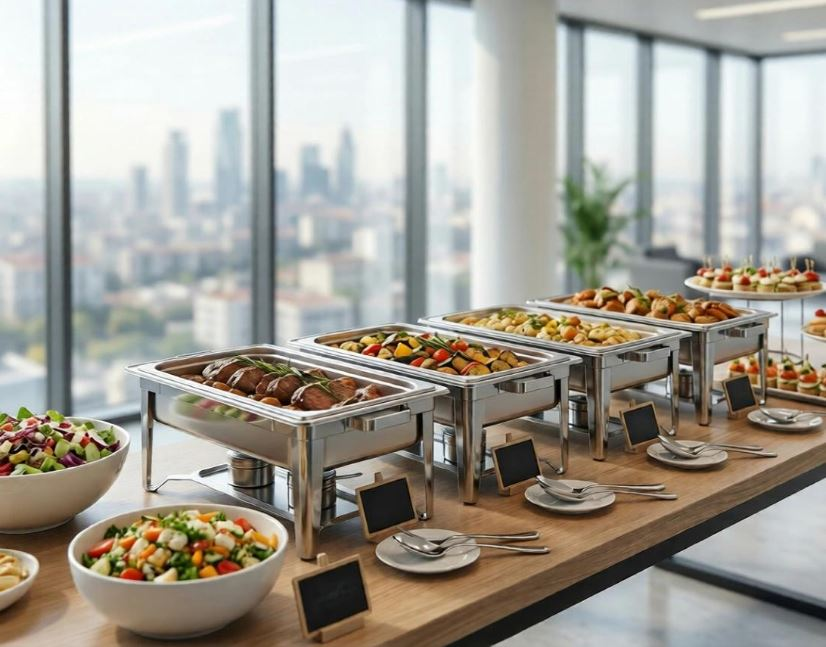
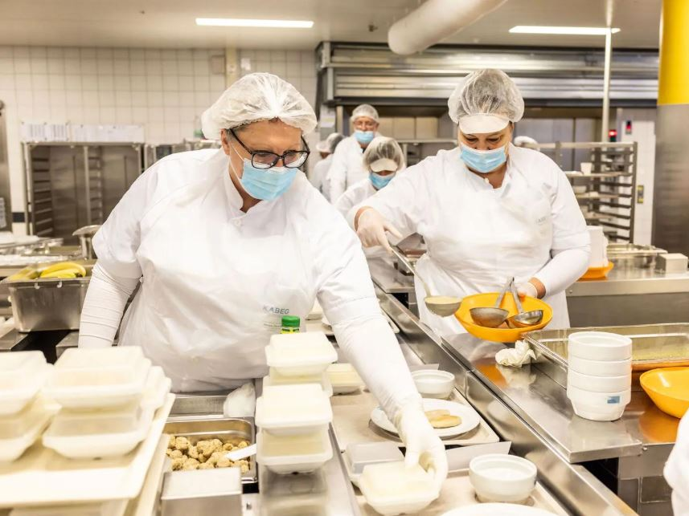
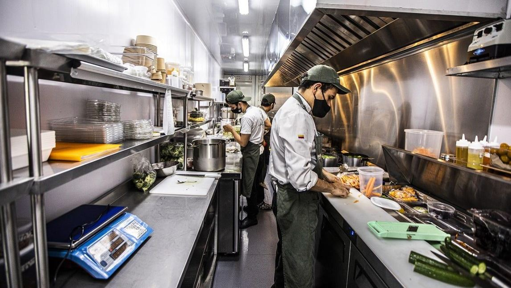

From scheduled catering to recurring meal programs, our services are designed around the people you're serving and the way your organization operates.
Food service for corporate events, meetings, private functions, community gatherings, and other organized events.
Dependable meal solutions for healthcare organizations and facilities with recurring or scheduled food service needs.
Flexible food preparation and fulfillment through a cloud-kitchen model designed around your volume and requirements.
Convenient food service for offices, staff meetings, training sessions, team events, and recurring workplace meal programs.
Planned meal service for organizations that need food prepared for groups on a defined or recurring schedule.
We can discuss your volume, schedule, dietary needs, and service model to build the right approach for requirements that don't fit a standard package.
A closer look at the catering, meal preparation, and kitchen environments our services are designed to support.



Tell us what you need and we'll build the service around your requirements.
We learn about your event, organization, guest count, schedule, dietary considerations, and service requirements.
We determine the right menu, quantities, preparation, fulfillment, and service approach.
Our team coordinates food preparation according to the agreed requirements and schedule.
We coordinate fulfillment and stay available for ongoing or recurring service needs.
Tell us about your event or food service requirements and we'll help build the right solution.